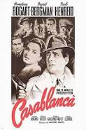
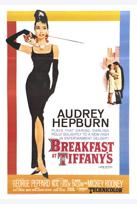

Micro Movie Reviews
Micro Movie Reviews
CLASSIC MOVIES

Casablanca (1942) | Rated: PG
During World War II in Casablanca, Rick Blaine (Humphrey Bogart) is an American expat who runs a popular club in town. Rick has secured two letters of transit that will allow him to leave Casablanca, if the Nazis decide to occupy it. Soon after, Nazi Major Strasser comes to Casablanca, and the local police Captain Renault does everything he can to appease Major Strasser. Therefore, he decides to detain Czech resistance leader Victor Laszlo. When Lazlo arrives in town, he arrives with Rick's former lover Ilsa (Ingrid Bergman). Rick still holds a grudge towards Ilsa, who bolted on him in Paris. When Rick finds out the real reason why Ilsa left Paris, he reconciles with Ilsa. They hatch a plan to use the letters of transit and leave Casablanca together. As with all plans, things changes, and with Rick and Ilsa their plan changes several times.
Stars: Humphrey Bogart, Ingrid Bergman, Paul Henreidn
Writers: Julius J. Epstein (screenplay), Philip G. Epstein (screenplay),
Howard Koch (screenplay), Murray Burnett (play), Joan Alison (play)
Director: Michael Curtiz
Genre: Classic Movie

Breakfast at Tiffany's (1961) | Rated: NR
Holly Golightly (Audrey Hepburn) is a young, charming socialite in New York City during the early 1960's. She's a fashion-plate who wears designer clothes from Givenchy and Coco Channel. Holly is a commitment-challenged person who lives for today. She's so averse to commitment that Holly decides not to give her cat a name. Holly simply calls her cat, "Cat". On the surface, Holly seems to have everything figured out.
After moving into her apartment building, Paul Varjak played by George Peppard becomes intrigued with Holly's style. The two become fast-friends, and Paul tries to began a relationship with Holly. Of course, Holly does not want any part of it. She wants to continue her shallow, commitment-free lifestyle. In the end, Holly must decide whether to change her ways for love or continue with her current lifestyle.
Stars: Audrey Hepburn, George Peppard, Patricia Neal
Writers: Truman Capote (novel)
Director: Blake Edwards
Genre: Classic Movie